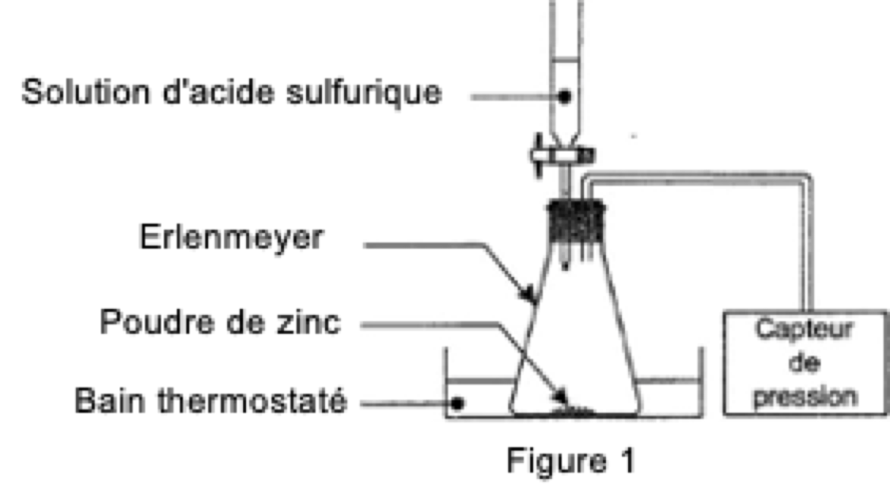
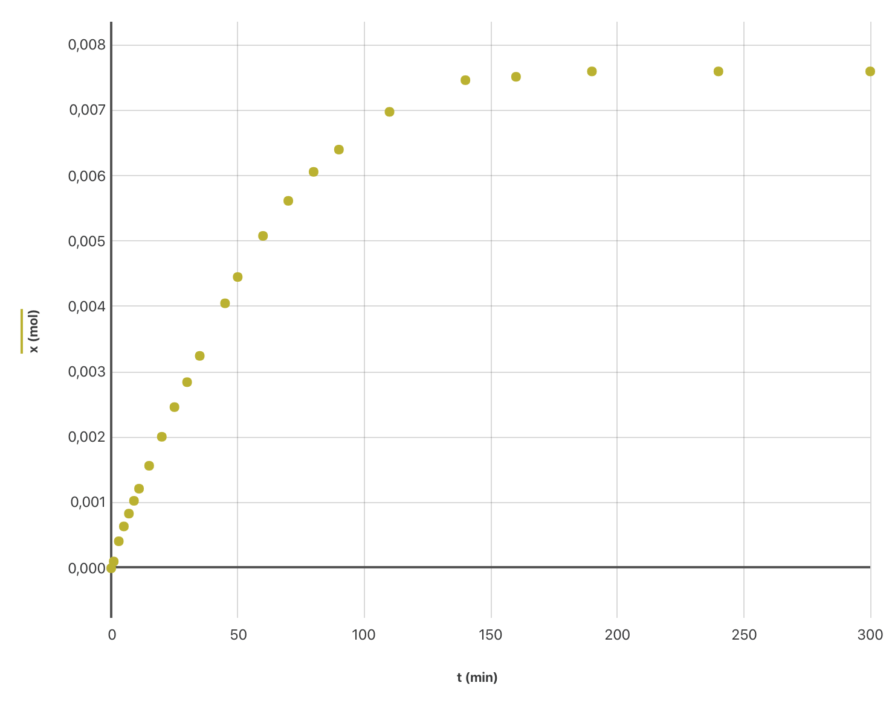
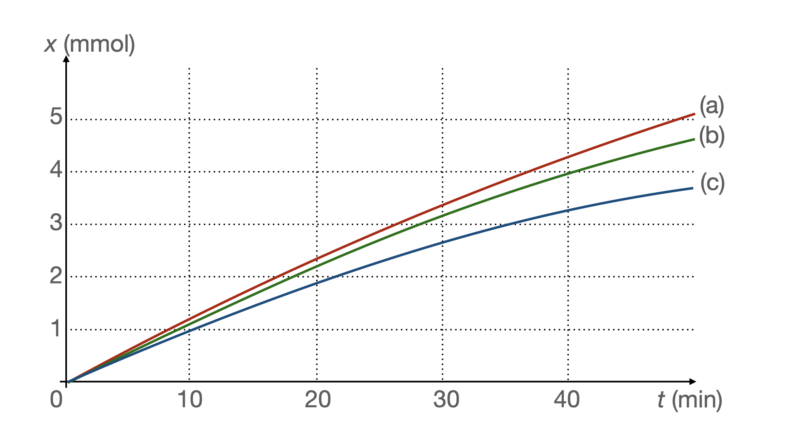
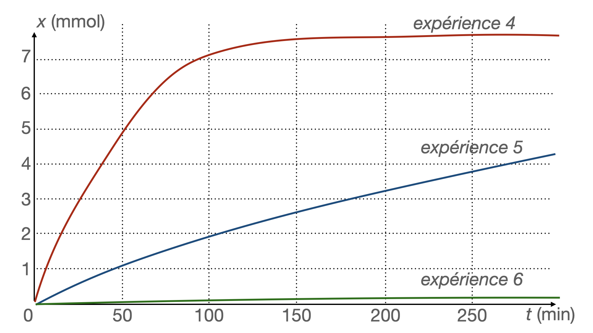

Les précipitations sont naturellement acides en raison du dioxyde de carbone présent dans l’atmosphère. Par ailleurs, la combustion des matières fossiles (charbon, pétrole et gaz) produit du dioxyde de soufre et des oxydes d’azote qui s’associent à l’humidité de l’air pour libérer de l’acide sulfurique et de l’acide nitrique. Ces acides sont ensuite transportés loin de leur source avant d’être précipités par les pluies, le brouillard, la neige ou sous forme de dépôts secs.
Très souvent, les pluies s’écoulant des toits sont recueillies par des gouttières métalliques, constituées de zinc.
Données
- Masse molaire atomique du zinc : $M\ce{(Zn}) = \pu{65,4 g.mol–1}$ ;
- Loi des gaz parfaits : $PV = nRT$ (relation entre la pression en pascal (Pa), le volume en mètre-cube ($\pu{m3}$), la quantité de matière en mole (mol) et la température en kelvin (K)) ;
- Constante des gaz parfaits : $R = \pu{8,31 J.mol−1.K−1}$ ;
- Couples acide / base :
- $\ce{H3O+ / H2O}$ ;
- $\ce{H2O / HO– }$ ;
- $\ce{CO2, H2O / HCO3– }$.
- Le zinc est un métal qui réagit en milieu acide selon la réaction d’équation : $$\ce{ Zn(s) + 2 H3O+ –> Zn^{2+} (aq) + H2 (g) + 2 H2O }$$
Suivi cinétique de la transformation
Pour étudier cette transformation, considérée comme totale, on réalise l’expérience dont le schéma simplifié est représenté sur la figure 1.
Figure 1. 
À l’instant de date $t = \pu{0 s}$, on verse rapidement, sur $\pu{0,50 g}$ de poudre de zinc, $\pu{75,0 mL}$ de solution d’acide sulfurique de concentration en ions oxonium $\ce{H3O+}$ égale à $\pu{0,40 mol.L-1}$.
La pression mesurée à cet instant par le capteur est $P_i = \pu{1020 hPa}$.
La formation de dihydrogène crée une surpression qui s’additionne à la pression de l’air initialement présent.
Les valeurs de la pression, mesurée à différentes dates par le capteur de pression, sont reportées dans le tableau page suivante :
| t (min) | 0 | 1,0 | 3,0 | 5,0 | 7,0 | 9,0 | 11,0 | 15,0 | 20,0 | 25,0 | 30,0 | 35,0 |
|---|---|---|---|---|---|---|---|---|---|---|---|---|
| P (hPa) | 1020 | 1030 | 1060 | 1082 | 1101 | 1120 | 1138 | 1172 | 1215 | 1259 | 1296 | 1335 |
| t (min) | 45,0 | 50,0 | 60,0 | 70,0 | 80,0 | 90,0 | 110,0 | 140,0 | 160,0 | 190,0 | 240,0 | 300,0 |
|---|---|---|---|---|---|---|---|---|---|---|---|---|
| P (hPa) | 1413 | 1452 | 1513 | 1565 | 1608 | 1641 | 1697 | 1744 | 1749 | 1757 | 1757 | 1757 |
-
Établir le tableau d’avancement de la réaction.
-
En déduire la valeur de l’avancement maximal $x_{max}$. Quel est le réactif limitant ?
On considère que le dihydrogène libéré par la réaction est un gaz parfait. À chaque instant la surpression $(P – P_i )$ est proportionnelle à la quantité $n(\ce{H2})$ de dihydrogène formé et inversement proportionnelle au volume $V_{gaz}$ de gaz contenu dans l’erlenmeyer : $(P – P_i )V_{gaz} = n(\ce{H2})RT$, où $P_i$ représente la pression mesurée à la date $t = \pu{0 s}$, $P$ la pression mesurée par le capteur et $T$ la température du milieu (maintenue constante pendant l’expérience).
-
Quelle est la relation donnant l’avancement $x$ de la réaction en fonction de $(P – P_i )$, $V_{gaz}$, $R$ et $T$ ?
-
On note $P_{max}$ la pression mesurée à l’état final.
Écrire la relation donnant l’avancement $x_{max}$ en fonction de $P_{max}$, $P_i$, $V_{gaz}$, $R$ et $T$. -
En déduire la relation donnant l’avancement $x$ : $$x = x_{max} \left( \dfrac{P – P_i}{ P_{max} – P_i } \right) $$
Fichier de données pour traitement avec Graphical AnalysisFigure 2 : Évolution de l’avancement $x$ en fonction du temps. 
-
Vérifier à l’aide de la courbe la valeur de $x_{max}$ trouvée à la question 2.
-
À l’aide du tableau des résultats, déterminer la valeur de l’avancement à la date $t = \pu{50,0 min}$. Vérifier cette valeur sur la courbe.
-
Comment peut-on déduire de la figure donnant $x = f(t)$ l’évolution de la vitesse volumique de réaction au cours de la transformation chimique étudiée (le volume est supposé constant lors de cette expérience) ?
Décrire qualitativement cette évolution.
Facteurs cinétiques
Influence de la concentration en ions oxonium
On reprend le montage précédent et on réalise les trois expériences suivantes :
| Expérience 1 | Expérience 2 | Expérience 3 | |
|---|---|---|---|
| Température | 25 °C | 25 °C | 25 °C |
| Masse initiale de zinc | 0,50 g | 0,50 g | 0,50 g |
| Forme du zinc | poudre | poudre | poudre |
| Volume de la solution d’acide sulfurique versée | 75 mL | 75 mL | 75 mL |
| Concentration initiale en ions oxonium | $\pu{0,50 mol.L-1}$ | $\pu{0,25 mol.L-1}$ | $\pu{0,40 mol.L-1}$ |
Pour chacune des expériences 1, 2 et 3, on a tracé sur la figure 3 ci-dessous les trois courbes $(a)$, $(b)$ et $(c)$ représentant l’avancement de la réaction lors des 50 premières minutes.
Figure 3. 
- Associer à chacune des courbes de la figure 3 le numéro de l’expérience 1, 2 ou 3 correspondante. Justifier.
Influence de la forme du zinc (division et état de surface)
On reprend le montage de la figure 1 et on réalise trois nouvelles expériences :
- avec de la poudre de zinc ;
- avec de la grenaille de zinc récemment fabriquée ;
- avec de la grenaille de zinc de fabrication ancienne.
| Expérience 4 | Expérience 5 | Expérience 6 | |
|---|---|---|---|
| Température | 25 °C | 25 °C | 25 °C |
| Masse initiale de zinc | 0,50 g | 0,50 g | 0,50 g |
| Forme du zinc | poudre | grenaille | grenaille de zinc de fabrication ancienne recouverte d’une couche de carbonate de zinc |
| Volume de la solution d’acide sulfurique versé | 75 mL | 75 mL | 75 mL |
| Concentration initiale en ions oxonium | $\pu{0,50 mol.L-1}$ | $\pu{0,50 mol.L-1}$ | $\pu{0,50 mol.L-1}$ |
On trace les courbes $x = f(t)$ pour les trois expériences et on obtient la figure 4 page suivante :
Figure 4. 
-
À partir des courbes obtenues lors des expériences 4 et 5, indiquer quelle est l’influence de la surface du zinc en contact avec la solution sur la vitesse de réaction.
-
En milieu humide, le zinc se couvre d’une mince couche de carbonate de zinc qui lui donne un aspect patiné.
À partir des courbes obtenues, indiquer quelle est l’influence de cette couche de carbonate de zinc sur la vitesse de réaction.
Pluies acides et gouttières
Les précipitations naturelles et non polluées forment des solutions acides. Leur acidité est due au dioxyde de carbone qui se dissout dans l’eau.
L’équation entre l’eau et le dioxyde de carbone s’écrit :
$$\ce{
CO2 (aq) + 2 H2O (l) –> HCO3^– (aq) + H3O+
}$$
En France le pH moyen annuel des eaux de pluie est de l’ordre de 5.
-
À partir de la valeur du pH citée ci-dessus, déterminer la valeur moyenne de la concentration en ions oxonium $\ce{H3O+}$ rencontrés dans les eaux de pluie.
-
Les trois facteurs cinétiques étudiés dans la section précédente permettent-ils d’expliquer la longévité des gouttières en zinc dans les habitations ?